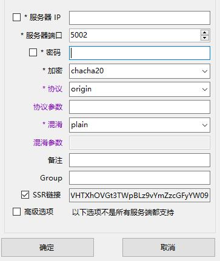
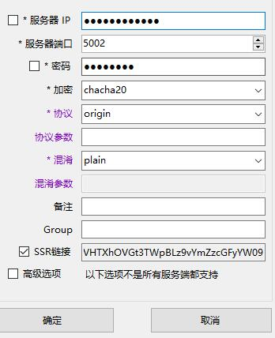
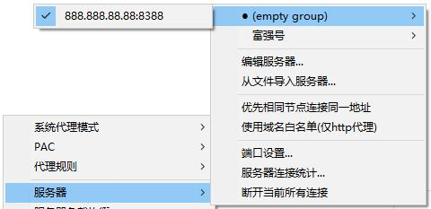

Windows设置指南
Windows设置指南
1.首先在这里下载Shadowsocks的Windows客户端
2.从里面下载Shadowsocks-win-2.5.6.zip解压并运行Shadowsocks.exe 这个程序
3.根据Victor提供的帐号信息，填写服务器地址（IP或者域名），端口，加密方式和密码，完成后点击确定
4.右键点击任务栏左下角纸飞机图标，选择服务器
5.在系统代理模式当中可以选择工作模式，有三种模式，不经过代理，PAC模式（智能分流），全局模式（所有网站经过代理）